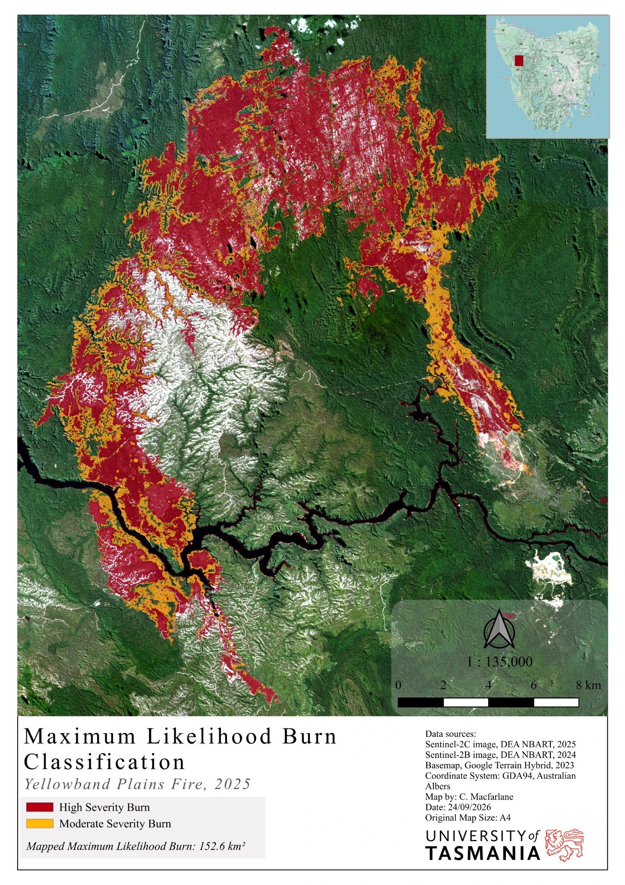

GIS · Remote sensing · RPA mapping
Mapping the world with science & creativity.
Hi, I'm Callum. I'm a Geography and Environmental Science graduate exploring how geospatial technology can help us understand and visualise the world around us.
A few things I've mapped.
From satellite imagery and environmental planning to photogrammetric accuracy. A selection of projects from my GIS studies.

Yellowband Plains Fire
Mapping fire impacts using satellite imagery, NBR change detection and image classification.

Philosopher's Tale
Exploring competing access and cost priorities in wilderness hut site selection.

GPS vs RTK Positional Accuracy
Comparing two georeferencing approaches across 18 surveyed checkpoints, with spatial visualisations of horizontal and vertical error.

A curiosity for places, patterns & possibilities.
What drew me to GIS was the opportunity to blend environmental science with creativity. Turning complex spatial information into maps and insights people can actually use. Outside of GIS, you'll usually find me travelling, climbing or exploring somewhere outdoors.
Read more about me ↗Let's get in touch.
Interested in my work, have a question, or want to discuss an opportunity? I'd love to hear from you.
Calmacfarlane42@gmail.com